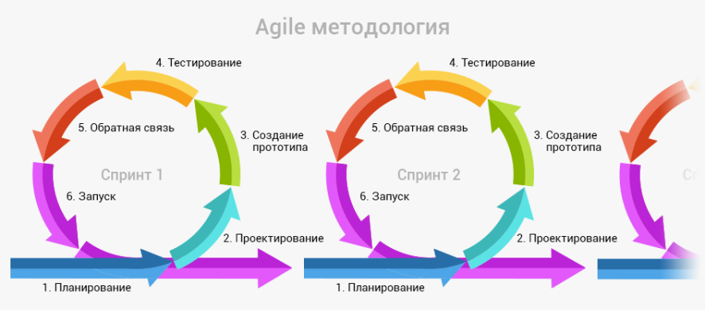

Последнее обновление: 5 июля 2022
Здравствуйте, меня зовут Олег и я программист на java. Приветствую вас на моей личной GitHub-страничке. Здесь я буду выкладывать информацию по моим проектам. Можно сказать, что данная страница является моим резюме.
Содержание:
На сегодняшний день я работаю в стеке технологий java и разрабатываю приложения под платформу android. Вот те инструменты которыми я пользуюсь на данный момент:
Кроме вышеперечисленного я также в разной степени владею(пользовался в своей практике) следующим инструментарием:
На данный момент у меня только один релевантный проект, я работаю сейчас над несколькими мелкими проектами, которые также тут вскоре появятся(а эта строчка исчезнет). Итак мои проекты на сегодня
| Фирма: | Ltd. Aggressive Games |
|---|---|
| Годы: | сентябрь 2013 - декабрь 2014 (1 год и 4 месяца) |
| Сайт продукта: | https://www.iphones.ru/iNotes/377578> |
| Должность: | главный программист |
| Обязанности: | Я пришёл на место ушедшего предыдущего программиста в самом начале разработки, когда было готово т.з. и уже заложена база. Проект был изучен и продолжена линия заложенная дло меня предыдущем программистом. В частности программист бывший до меня оставил послностью готовую ООП базу, которая впрочем была им также взята со стороны. Также компиляция под iOS на конечной стадии проекта выполнялась с привлечением стороннего человека. Но вот всё остальное включая программировние графики(кроме шейдерного языка) было сделано полностью мной. |
| Реальный опыт: |
|
В программированнии стараюсь придерживаться принципа KISS. Расшифровают его и как Keep it simple, stupid или что можно помягче сформулировать как Keep It Short and Simple.
В то же время считаю, что везде должен быть разумный подход. Бывает лучше не использовать изображение формата WebP и потерять несколько мегабайт памяти на SD карте у пользователя, согласитесь это не страшно. Но... но если разработчик везде вместо типа byte пользуется Integer это может говорить о том, что он не знаком с принципом инкапсуляции. И наоброт, если он везде оптимизирует по максимуму, это говорит, что он не работал на больших проектах. Погодите, я сейчас развёрнуто поясню свою мысль.
Именно для того, чтобы писать эфективные и простые программы и создана ООП, а не для того, чтобы твои коллеги хватались потом за голову когда им нужно будет расширить/сменить архитектуру. Как показывает практика проектный подход(вначале т.з., а дальше реализация) не работает в программировании, вместо этого мы все, включая тех, кто составляет эти самые т.з., работаем итерациями.

Сообственно как раз здесь, где вы читаете эти стороки, на платфоме GitHub, можно прекрассно наблюдать, что принцип итеративной разработки очень эфективная вещь.
Но вернёмся к нашим byte и integer. Экономия на спичках это действиетльно плохо, в конце концов вылизывать программу можно до бесконечности. Однако, надо отличать проходные вещи, от высоконагруженных участков. А обнаружатся эти самые участки как раз к концу проекта. Именно тогда, когда казалось бы дебаг закончин может оказывается, что проект не тянет целая группа устройств. Я говорю сейчас о мобильной разработке, но в других нишах будут кончно свои собственные последствия, вот даже в видеомонтаже забивание на мелочи даёт в итоге впечатление сырого видео у зрителя.
И вот тут у нас на переднюю сцену выходит ООП с его инкапсуляцией. Когда области разделены, то выходит, что Вася может вылизывать свою графику, а Костян писать километры кода(но не говнокода!) с Integer'ами расчитывая, что в этом месте архитектура возможно ещё поменяется. И самое крутое, когда после этого код может прочитать/отревьювить Саша, Вадим и Катя. Вот это называтся культурой программирования.
Раздел в разработке
Дальнейшие планы связаны с адроид-разработкой. В данный момент я наращиваю опыт на мелких игрушках, чтобы дальше делать ряд полноценных проектов. Ближайшим крупным проектом у меня стоит программа для работы с графикой под андроид. Я её буду делать не один, а в команде с одним человеком, который и будет непосредственным пользователем данного продукта.
Я веду здоровый образ жизни и изучаю знания древнего мира, как востоxные так и западные. В частности меня интересуют боевые искусства, опять же со всего мира. И особенно меня заинтересовало фехтование, причём с точки зрения био-механники тела. Впрочем как программисту для мня важны руки, поэтому можно сказать работаю чисто с теорией. Никаких спаррингов или даже обучения не веду. Материал по всему этому делу собираю телеграмм канале Занимательная БиоМеханника, который впрочем также не предназначен для пиара, хотя и приватным его я делать не собираюсь. Бывает что надо с кем-то перекинуться мыслями по тому или иному аспекту из БИ, но вести полноценный телеграмм канал я не буду это слишком обременительно.
Ещё также меня интересует древний мир вообще, особенно период когда на территории Европы появились постройки в романском стиле(они есть не только в Европе между прочем). Период этот особенно интересен тем, что раняя Европейская цивилизация сумела подобрать знания античности и не только адаптировать их к себе, но и продолжить развитие. Произошло это правда транзитом через страны востока во время крестовых походов. И соотвтественно развитие пошло лишь с XIV-XV веков, но само место действия довольно примечательно и интересно.
Вы можете связаться со мной по следующим адресам:
Оглавление:
Автор странички: Олег ШабашевСоздано на основе фреймворка sacura.css